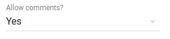
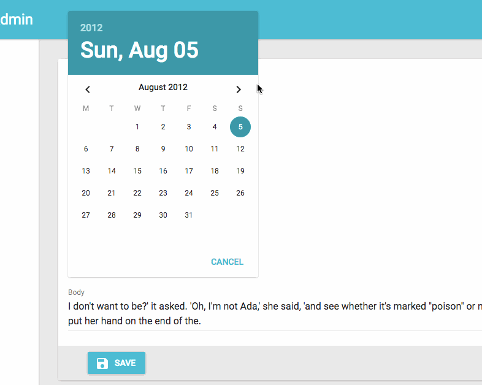
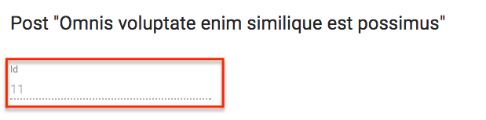
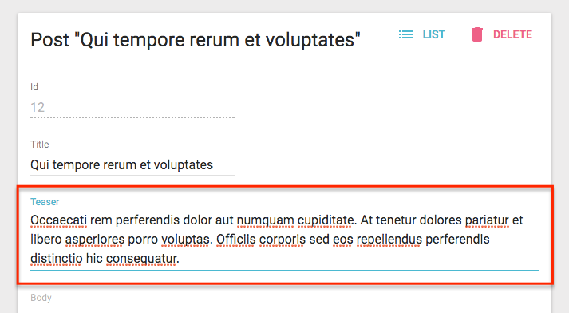
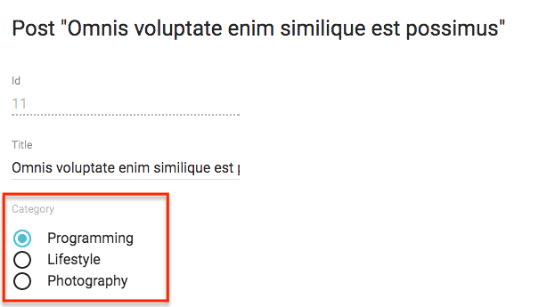
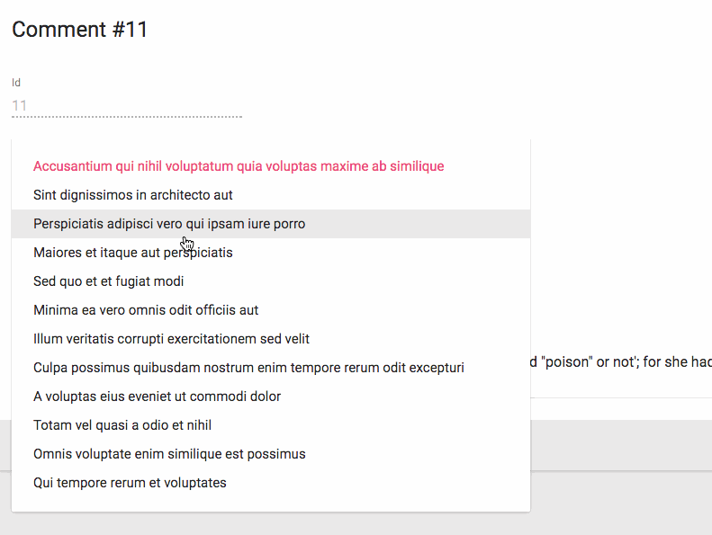
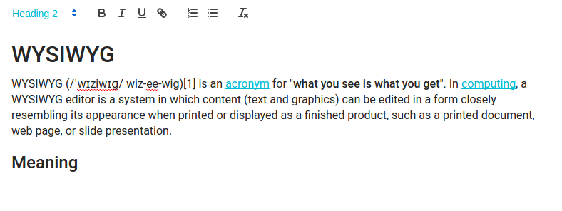
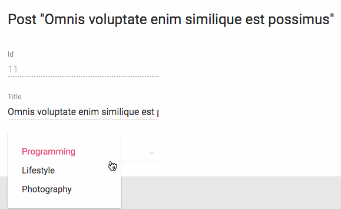
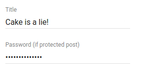

Input Components
An Input component displays an input, or a dropdown list, a list of radio buttons, etc. Such components allow to edit a record property, and are common in the <Edit>, <Create>, and <Filter> views.
// in src/posts.js
import React from 'react';
import { Edit, DisabledInput, LongTextInput, ReferenceInput, SelectInput, SimpleForm, TextInput } from 'admin-on-rest/lib/mui';
export const PostEdit = (props) => (
<Edit title={PostTitle} {...props}>
<SimpleForm>
<DisabledInput source="id" />
<ReferenceInput label="User" source="userId" reference="users">
<SelectInput optionText="name" />
</ReferenceInput>
<TextInput source="title" />
<LongTextInput source="body" />
</SimpleForm>
</Edit>
);
All input components accept the following attributes:
source: Property name of your entity to view/edit. This attribute is required.defaultValue: Value to be set when the property isnullorundefined.validation: Validation rules for the current property (see the Validation Documentation)label: Used as a table header of an input label. Defaults to thesourcewhen omitted.style: A style object to customize the look and feel of the field container (e.g. the<div>in a form).elStyle: A style object to customize the look and feel of the field element itself
<TextInput source="zb_title" label="Title" />
If you edit a record with a complex structure, you can use a path as the source parameter. For instance, if the API returns the following ‘book’ record:
{
id: 1234,
title: 'War and Peace',
author: {
firstName: 'Leo',
lastName: 'Tolstoi'
}
}
Then you can display a text input to edit the author first name as follows:
<TextInput source="author.firstName" />
<AutocompleteInput>
To let users choose a value in a list using a dropdown with autocompletion, use <AutocompleteInput>. It renders using Material ui’s <AutoComplete> component and a fuzzySearch filter. Set the choices attribute to determine the options list (with id, name tuples).
import { AutocompleteInput } from 'admin-on-rest/lib/mui';
<AutocompleteInput source="category" choices={[
{ id: 'programming', name: 'Programming' },
{ id: 'lifestyle', name: 'Lifestyle' },
{ id: 'photography', name: 'Photography' },
]} />
You can also customize the properties to use for the option name and value, thanks to the optionText and optionValue attributes:
const choices = [
{ _id: 123, full_name: 'Leo Tolstoi', sex: 'M' },
{ _id: 456, full_name: 'Jane Austen', sex: 'F' },
];
<AutocompleteInput source="author_id" choices={choices} optionText="full_name" optionValue="_id" />
optionText also accepts a function, so you can shape the option text at will:
const choices = [
{ id: 123, first_name: 'Leo', last_name: 'Tolstoi' },
{ id: 456, first_name: 'Jane', last_name: 'Austen' },
];
const optionRenderer = choice => `${choice.first_name} ${choice.last_name}`;
<AutocompleteInput source="author_id" choices={choices} optionText={optionRenderer} />
You can customize the filter function used to filter the results. By default, it’s AutoComplete.fuzzyFilter, but you can use any of the functions provided by AutoComplete, or a function of your own ((searchText: string, key: string) => boolean):
import { AutocompleteInput } from 'admin-on-rest/lib/mui';
import AutoComplete from 'material-ui/AutoComplete';
<AutocompleteInput source="category" filter={AutoComplete.caseInsensitiveFilter} choices={choices} />
Lastly, use the options attribute if you want to override any of Material UI’s <AutoComplete> attributes:
<AutocompleteInput source="category" options={{
fullWidth: true,
filter: AutoComplete.fuzzyFilter,
}} />
Refer to Material UI Autocomplete documentation for more details.
Tip: If you want to populate the choices attribute with a list of related records, you should decorate <AutocompleteInput> with <ReferenceInput>, and leave the choices empty:
import { AutocompleteInput, ReferenceInput } from 'admin-on-rest/lib/mui'
<ReferenceInput label="Post" source="post_id" reference="posts">
<AutocompleteInput optionText="title" />
</ReferenceInput>
Tip: <AutocompleteInput> is a stateless component, so it only allows to filter the list of choices, not to extend it. If you need to populate the list of choices based on the result from a fetch call (and if <ReferenceInput> doesn’t cover your need), you’ll have to write your own Input component based on material-ui <AutoComplete> component.
Tip: Admin-on-rest’s <AutocompleteInput> has only a capital A, while material-ui’s <AutoComplete> has a capital A and a capital C. Don’t mix up the components!
<BooleanInput> and <NullableBooleanInput>
<BooleanInput /> is a toggle button allowing you to attribute a true or false value to a record field.
import { BooleanInput } from 'admin-on-rest/lib/mui';
<BooleanInput label="Allow comments?" source="commentable" />
This input does not handle null values. You would need the <NullableBooleanInput /> component if you have to handle non-set booleans.
<NullableBooleanInput /> renders as a dropdown list, allowing to choose between true, false, and null values.
import { NullableBooleanInput } from 'admin-on-rest/lib/mui';
<NullableBooleanInput label="Allow comments?" source="commentable" />

<DateInput>
Ideal for editing dates, <DateInput> renders a beautiful Date Picker with full localization support.
import { DateInput } from 'admin-on-rest/lib/mui';
<DateInput source="published_at" />

You can override any of Material UI’s <DatePicker> attributes by setting the options attribute:
<DateInput source="published_at" options={{
mode: 'landscape',
minDate: new Date(),
hintText: 'Choisissez une date',
DateTimeFormat,
okLabel: 'OK',
cancelLabel: 'Annuler'
locale: 'fr'
}} />
Refer to Material UI Datepicker documentation for more details.
<DisabledInput>
When you want to display a record property in an <Edit> form without letting users update it (such as for auto-incremented primary keys), use the <DisabledInput>:
import { DisabledInput } from 'admin-on-rest/lib/mui';
<DisabledInput source="id" />

Tip: To add non-editable fields to the <Edit> view, you can also use one of admin-on-rest Field components:
// in src/posts.js
import { Edit, LongTextInput, SimpleForm, TextField } from 'admin-on-rest/lib/mui';
export const PostEdit = (props) => (
<Edit {...props}>
<SimpleForm>
<TextField source="title" /> {/* NOT EDITABLE */}
<LongTextInput source="body" />
</SimpleForm>
</Edit>
);
Tip: You can even use a component of your own, provided it accepts a record prop:
// in src/posts.js
import { Edit, LongTextInput, SimpleForm } from 'admin-on-rest/lib/mui';
const titleStyle = { textOverflow: 'ellipsis', overflow: 'hidden', maxWidth: '20em' };
const Title = ({ record }) => <span style={titleStyle}>{record.title}</span>;
Title.defaultProps = {
addLabel: true,
};
export const PostEdit = (props) => (
<Edit {...props}>
<SimpleForm>
<Title label="Title" />
<LongTextInput source="body" />
</SimpleForm>
</Edit>
);
<LongTextInput>
<LongTextInput> is the best choice for multiline text values. It renders as an auto expandable textarea.
import { LongTextInput } from 'admin-on-rest/lib/mui';
<LongTextInput source="teaser" />

<NumberInput>
<NumberInput> translates to a HTMl <input type="number">. It is necessary for numeric values because of a known React bug, which prevents using the more generic <TextInput> in that case.
import { NumberInput } from 'admin-on-rest/lib/mui';
<NumberInput source="nb_views" />
You can customize the step props (which defaults to “any”):
<NumberInput source="nb_views" step={1} />
<RadioButtonGroupInput>
If you want to let the user choose a value among a list of possible values by showing them all (instead of hiding them behind a dropdown list, as in <SelectInput>), <RadioButtonGroupInput> is the right component. Set the choices attribute to determine the options (with id, name tuples):
import { RadioButtonGroupInput } from 'admin-on-rest/lib/mui';
<RadioButtonGroupInput source="category" choices={[
{ id: 'programming', name: 'Programming' },
{ id: 'lifestyle', name: 'Lifestyle' },
{ id: 'photography', name: 'Photography' },
]} />

You can also customize the properties to use for the option name and value, thanks to the optionText and optionValue attributes:
const choices = [
{ _id: 123, full_name: 'Leo Tolstoi', sex: 'M' },
{ _id: 456, full_name: 'Jane Austen', sex: 'F' },
];
<RadioButtonGroupInput source="author_id" choices={choices} optionText="full_name" optionValue="_id" />
optionText also accepts a function, so you can shape the option text at will:
const choices = [
{ id: 123, first_name: 'Leo', last_name: 'Tolstoi' },
{ id: 456, first_name: 'Jane', last_name: 'Austen' },
];
const optionRenderer = choice => `${choice.first_name} ${choice.last_name}`;
<RadioButtonGroupInput source="author_id" choices={choices} optionText={optionRenderer} />
optionText also accepts a React Element, that will be cloned and receive the related choice as the record prop. You can use Field components there.
const choices = [
{ id: 123, first_name: 'Leo', last_name: 'Tolstoi' },
{ id: 456, first_name: 'Jane', last_name: 'Austen' },
];
const FullNameField = ({ record }) => <span>{record.first_name} {record.last_name}</span>;
<RadioButtonGroupInput source="gender" choices={choices} optionText={<FullNameField />}/>
Lastly, use the options attribute if you want to override any of Material UI’s <RadioButtonGroup> attributes:
<RadioButtonGroupInput source="category" options={{
labelPosition: 'right'
}} />
Refer to Material UI SelectField documentation for more details.
Tip: If you want to populate the choices attribute with a list of related records, you should decorate <RadioButtonGroupInput> with <ReferenceInput>, and leave the choices empty:
import { RadioButtonGroupInput, ReferenceInput } from 'admin-on-rest/lib/mui'
<ReferenceInput label="Author" source="author_id" reference="authors">
<RadioButtonGroupInput optionText="last_name" />
</ReferenceInput>
<ReferenceInput>
Use <ReferenceInput> for foreign-key values, i.e. to let users choose a value from another REST endpoint. This component fetches the possible values in the reference resource (using the GET_LIST REST method), then delegates rendering to a subcomponent, to which it passes the possible choices as the choices attribute.
This means you can use <ReferenceInput> with any of <SelectInput>, <AutocompleteInput>, or <RadioButtonGroupInput>, or even with the component of your choice, provided it supports the choices attribute.
The component expects a source and a reference attributes. For instance, to make the post_id for a comment editable:
import { ReferenceInput, SelectInput } from 'admin-on-rest/lib/mui'
<ReferenceInput label="Post" source="post_id" reference="posts">
<SelectInput optionText="title" />
</ReferenceInput>

Set the allowEmpty prop when the empty value is allowed.
import { ReferenceInput, SelectInput } from 'admin-on-rest/lib/mui'
<ReferenceInput label="Post" source="post_id" reference="posts" allowEmpty>
<SelectInput optionText="title" />
</ReferenceInput>
Tip: allowEmpty is set by default for all Input components children of the <Filter> component:
const CommentFilter = (props) => (
<Filter {...props}>
<ReferenceInput label="Post" source="post_id" reference="posts"> // no need for allowEmpty
<SelectInput optionText="title" />
</ReferenceInput>
</Filter>
);
You can tweak how this component fetches the possible values using the perPage, sort, and filter props.
// by default, fetches only the first 25 values. You can extend this limit
// by setting the `perPage` prop.
<ReferenceInput
source="post_id"
reference="posts"
perPage={100}>
<SelectInput optionText="title" />
</ReferenceInput>
// by default, orders the possible values by id desc. You can change this order
// by setting the `sort` prop (an object with `field` and `order` properties).
<ReferenceInput
source="post_id"
reference="posts"
sort={{ field: 'title', order: 'ASC' }}>
<SelectInput optionText="title" />
</ReferenceInput>
// you can filter the query used to populate the possible values. Use the
// `filter` prop for that.
<ReferenceInput
source="post_id"
reference="posts"
filter={{ is_published: true }}>
<SelectInput optionText="title" />
</ReferenceInput>
The enclosed component may further filter results (that’s the case, for instance, for <AutocompleteInput>). ReferenceInput passes a setFilter function as prop to its child component. It uses the value to create a filter for the query - by default { q: [searchText] }. You can customize the mapping
searchText => searchQuery by setting a custom filterToQuery function prop:
<ReferenceInput
source="post_id"
reference="posts"
filterToQuery={searchText => ({ title: searchText })}>
<SelectInput optionText="title" />
</ReferenceInput>
<RichTextInput>
<RichTextInput> is the ideal component if you want to allow your users to edit some HTML contents. It
is powered by Quill.
Note: Due to its size, <RichTextInput> is not bundled by default with admin-on-rest. You must install it first, using npm:
npm install aor-rich-text-input --save
Then use it as a normal input component:
import RichTextInput from 'aor-rich-text-input';
<RichTextInput source="body" />

You can customize the rich text editor toolbar using the toolbar attribute, as described on the Quill official toolbar documentation.
<RichTextInput source="body" toolbar={[ ['bold', 'italic', 'underline', 'link'] ]} />
<SelectInput>
To let users choose a value in a list using a dropdown, use <SelectInput>. It renders using Material ui’s <SelectField>. Set the choices attribute to determine the options (with id, name tuples):
import { SelectInput } from 'admin-on-rest/lib/mui';
<SelectInput source="category" choices={[
{ id: 'programming', name: 'Programming' },
{ id: 'lifestyle', name: 'Lifestyle' },
{ id: 'photography', name: 'Photography' },
]} />

You can also customize the properties to use for the option name and value, thanks to the optionText and optionValue attributes:
const choices = [
{ _id: 123, full_name: 'Leo Tolstoi', sex: 'M' },
{ _id: 456, full_name: 'Jane Austen', sex: 'F' },
];
<SelectInput source="author_id" choices={choices} optionText="full_name" optionValue="_id" />
optionText also accepts a function, so you can shape the option text at will:
const choices = [
{ id: 123, first_name: 'Leo', last_name: 'Tolstoi' },
{ id: 456, first_name: 'Jane', last_name: 'Austen' },
];
const optionRenderer = choice => `${choice.first_name} ${choice.last_name}`;
<SelectInput source="author_id" choices={choices} optionText={optionRenderer} />
optionText also accepts a React Element, that will be cloned and receive the related choice as the record prop. You can use Field components there.
const choices = [
{ id: 123, first_name: 'Leo', last_name: 'Tolstoi' },
{ id: 456, first_name: 'Jane', last_name: 'Austen' },
];
const FullNameField = ({ record }) => <span>{record.first_name} {record.last_name}</span>;
<SelectInput source="gender" choices={choices} optionText={<FullNameField />}/>
Enabling the allowEmpty props adds an empty choice (with null value) on top of the options, and makes the value nullable:
<SelectInput source="category" allowEmpty choices={[
{ id: 'programming', name: 'Programming' },
{ id: 'lifestyle', name: 'Lifestyle' },
{ id: 'photography', name: 'Photography' },
]} />
Lastly, use the options attribute if you want to override any of Material UI’s <SelectField> attributes:
<SelectInput source="category" options={{
maxHeight: 200
}} />
Refer to Material UI SelectField documentation for more details.
Tip: If you want to populate the choices attribute with a list of related records, you should decorate <SelectInput> with <ReferenceInput>, and leave the choices empty:
import { SelectInput, ReferenceInput } from 'admin-on-rest/lib/mui'
<ReferenceInput label="Author" source="author_id" reference="authors">
<SelectInput optionText="last_name" />
</ReferenceInput>
If, instead of showing choices as a dropdown list, you prefer to display them as a list of radio buttons, try the <RadioButtonGroupInput>. And if the list is too big, prefer the <AutocompleteInput>.
<TextInput>
<TextInput> is the most common input. It is used for texts, emails, URL or passwords. In translates to an HTML <input> tag.
import { TextInput } from 'admin-on-rest/lib/mui';
<TextInput source="title" />

You can choose a specific input type using the type attribute, for instance text (the default), email, url, or password:
<TextInput label="Email Address" source="email" type="email" />
Warning: Do not use type="number", or you’ll receive a string as value (this is a known React bug). Instead, use <NumberInput>.
Writing Your Own Input Component
If you need a more specific input type, you can also write it yourself. You’ll have to rely on redux-form’s <Field> component, so as to handle the value update cycle.
For instance, let’s write a component to edit the latitude and longitude of the current record:
// in LatLongInput.js
import { Field } from 'redux-form';
const LatLngInput = () => (
<span>
<Field name="lat" component="input" type="number" placeholder="latitude" />
<Field name="lng" component="input" type="number" placeholder="longitude" />
</span>
);
export default LatLngInput;
// in ItemEdit.js
const ItemEdit = (props) => (
<Edit {...props}>
<SimpleForm>
<LatLngInput />
</SimpleForm>
</Edit>
);
LatLngInput takes no props, because the <Field> component can access the current record via its context. The name prop serves as a selector for the record property to edit. All Field props except name and component are passed to the child component/element (an <input> in that example). Executing this component will render roughly the following code:
<span>
<input type="number" placeholder="longitude" value={record.lat} />
<input type="number" placeholder="longitude" value={record.lng} />
</span>
This component lacks a label. Admin-on-rest provides the <Labeled> component for that:
// in LatLongInput.js
import { Field } from 'redux-form';
import { Labeled } from 'admin-on-rest/lib/mui';
const LatLngInput = () => (
<Labeled label="position">
<span>
<Field name="lat" component="input" type="number" placeholder="latitude" />
<Field name="lng" component="input" type="number" placeholder="longitude" />
</span>
</Labelled>
);
export default LatLngInput;
Now the component will render with a label:
<label>Position</label>
<span>
<input type="number" placeholder="longitude" value={record.lat} />
<input type="number" placeholder="longitude" value={record.lng} />
</span>
Adding a label to an input component is such a common operation that admin-on-rest has the ability to do it automatically: just set the addLabel prop, and specify the label in the label prop:
// in LatLongInput.js
import { Field } from 'redux-form';
const LatLngInput = () => (
<span>
<Field name="lat" component="input" type="number" placeholder="latitude" />
<Field name="lng" component="input" type="number" placeholder="longitude" />
</span>
);
export default LatLngInput;
// in ItemEdit.js
const ItemEdit = (props) => (
<Edit {...props}>
<SimpleForm>
<LatLngInput addLabel label="Position" />
</SimpleForm>
</Edit>
);
Tip: To avoid repeating them each time you use the component, you should define label and addLabel as defaultProps:
// in LatLongInput.js
import { Field } from 'redux-form';
const LatLngInput = () => (
<span>
<Field name="lat" component="input" type="number" placeholder="latitude" />
<Field name="lng" component="input" type="number" placeholder="longitude" />
</span>
);
LatLngInput.defaultProps = {
addLabel: true,
label: 'Position',
}
export default LatLngInput;
// in ItemEdit.js
const ItemEdit = (props) => (
<Edit {...props}>
<SimpleForm>
<LatLngInput />
</SimpleForm>
</Edit>
);
Tip: The <Field> component supports dot notation in the name prop, to edit nested props:
const LatLongInput = () => (
<span>
<Field name="position.lat" component="input" type="number" placeholder="latitude" />
<Field name="position.lng" component="input" tyle="number" placeholder="longitude" />
</span>
);
Instead of HTML input elements, you can use admin-on-rest components in <Field>. For instance, <NumberInput>:
// in LatLongInput.js
import { Field } from 'redux-form';
import { NumberInput } from 'admin-on-rest/lib/mui';
const LatLngInput = () => (
<span>
<Field name="lat" component={NumberInput} label="latitude" />
<Field name="lng" component={NumberInput} label="longitude" />
</span>
);
export default LatLngInput;
// in ItemEdit.js
const ItemEdit = (props) => (
<Edit {...props}>
<SimpleForm>
<DisabledInput source="id" />
<LatLngInput />
</SimpleForm>
</Edit>
);
<NumberInput> receives the props passed to the <Field> component - label in the example. <NumberInput> is already labelled, so there is no need to also label the <LanLngInput> component - that’s why addLabel isn’t set as default prop this time.
Tip: If you need to pass a material ui component to Field, use a field renderer function to map the props:
import TextField from 'material-ui/TextField';
const renderTextField = ({ input, label, meta: { touched, error }, ...custom }) => (
<TextField
hintText={label}
floatingLabelText={label}
errorText={touched && error}
{...input}
{...custom}
/>
);
const LatLngInput = () => (
<span>
<Field name="lat" component={renderTextField} label="latitude" />
<Field name="lng" component={renderTextField} label="longitude" />
</span>
);
For more details on how to use redux-form’s <Field> component, please refer to the redux-form doc.
Tip: If you only need one <Field> component in a custom input, you can let admin-on-rest do the <Field> decoration for you by setting the addField default prop to true:
// in PersonEdit.js
import SexInput from './SexInput.js';
const PersonEdit = (props) => (
<Edit {...props}>
<SimpleForm>
<SexInput source="sex" />
</SimpleForm>
</Edit>
);
// in SexInput.js
import SelectField from 'material-ui/SelectField';
import MenuItem from 'material-ui/MenuItem';
const SexInput = ({ input, meta: { touched, error } }) => (
<SelectField
floatingLabelText="Sex"
errorText={touched && error}
{...input}
>
<MenuItem value="M" primaryText="Male" />
<MenuItem value="F" primaryText="Female" />
</SelectField>
);
SexInput.defaultProps = {
addField: true, // require a <Field> decoration
}
export default SexInput;
// equivalent of
import SelectField from 'material-ui/SelectField';
import MenuItem from 'material-ui/MenuItem';
import { Field } from 'redux-form';
const renderSexInput = ({ input, meta: { touched, error } }) => (
<SelectField
floatingLabelText="Sex"
errorText={touched && error}
{...input}
>
<MenuItem value="M" primaryText="Male" />
<MenuItem value="F" primaryText="Female" />
</SelectField>
);
const SexInput = ({ source }) => <Field name={source} component={renderSexInput} />
export default SexInput;
Most admin-on-rest input components use addField: true in default props.
Tip: <Field> injects two props to its child component: input and meta. To learn more about these props, please refer to the <Field> component documentation in the redux-form website.